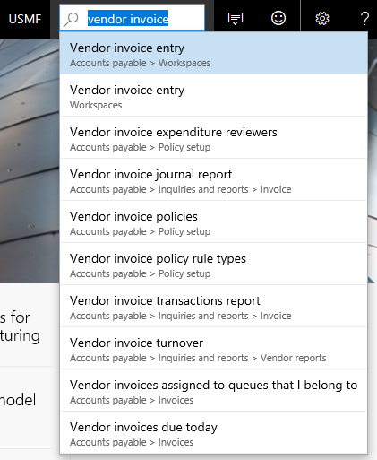

Navigationssuche
Important
Diese Dokumentation ist teilweise von Microsoft verfasst und wurde nicht auf Vollständigkeit geprüft. Wenn informationen fehlen oder ein weiteres Kapitel hinzugefügt werden soll bitte eine Mail an das Dokumentations Team schreiben.
In diesem Artikel wird beschrieben, wie die Suchfunktion verwendet wird, um zu den Seiten zu navigieren.
Die Bewerbung beinhaltet mehrere Bereiche und Seiten, um Ihnen dabei zu unterstützten, verschiedene Funktionen auszuführen. Um die Seiten rasch zu finden, die Sie mit Ihren Aufgaben durchführen müssen, verwenden Sie die Navigations-Suchfunktion.
Zur Verwendung dieser Funktion, klicken Sie auf das Symbol Suche um das Feld Suchen anzuzeigen. Sie können dann eines oder mehrere Wörter im Feld eingeben. Das Systems durchsucht sofort in der Anwendung nach entsprechenden Seiten, die den Begriffen entsprechen, die Sie eingegeben haben. So können Sie beispielsweise "Kreditorenrechnung" als Eingabe eingeben, und dann zeigt das System Ergebnisse an, die mit diese Eingabe übereinstimmen.
Note
Das Feld Suchen hilft Ihnen dabei, Seiten finden und zu navigieren. Es unterstützt Sie nicht dabei, bestimmte Daten oder Aktivitäten zu suchen.
[
Navigieren Sie schnell zu einer bestimmten Seite
Die Navigationssuchfunktion dient auch dazu, damit Sie schnell zu einer bestimmten Seite navigieren können. Wenn Sie beispielsweise Buchhalter für die Kreditorenkonten sind, der häufig die Seite Zahlungserfassung verwendet, können Sie " Zahlungserfassung" im Suchfeld eingeben. Da die Eingabe ein exaktes gleich wie der Seitentitel, wird die Seite oben der Suchergebnisse angezeigt, und Sie können sie schnell zu navigieren.
Die Suchergebnisliste zeigt sowohl den Seitentitel als auch den Navigationspfad an. Dies zeigt die Position der Seite in der Anwendung an. Darüber hinaus hilft es dabei, zwischen zwei oder mehr ähnlichen Seiten in den Ergebnissen zu unterscheiden.
Wenn Sie nach einer Seite suchen, wird die Eingabe mit dem Seitentitel sowie dem Navigationspfad abgeglichen. Wenn Sie zum Beispiel "erhältlich" im Feld Suchen eingeben, finden Sie Ergebnisse für die Seiten, die im Debitorenbereich verfügbar sind-obwohl der Seitentitel nicht das Wort "erhältlich" enthält.
Navigieren Sie schnell zu einer Seite basierend auf dem technischen Formularnamen
Die Navigationssuchfunktionen enthalten außerdem eine vielgenutzte Funktion für Poweruser: die Möglichkeit, schnell zu einer Seite basierend auf dem technischen Formularname zu navigieren. Viele Benutzer sind mit dem System so vertraut, dass ihnen die genauen Formularnamen bekannt sind, mit denen sie arbeiten. Wenn Sie einer dieser Benutzer sind, können Sie Formular: eingeben, gefolgt vom Namen des Formulars nach dem Sie suchen. Wenn Sie beispielsweise Formular: vendinvoice eingeben, enthalten die Suchergebnisse alle Seiten, in denen die Formularnamen mit vendinvoice beginnen.
Administration und Sicherheit
Aus Sicht einer Verwaltungs- und Sicherheitsperspektive tauchen in den Navigationssuchenfunktionen nur zwei Ergebnisstypen auf:
- Seiten, die in der aktuellen Konfiguration aktiviert sind (über Konfigurationsschlüssel).
- Seiten, auf die der Benutzer aufgrund seiner Rolle Zugriff hat.
Die Liste von Suchergebnissen ist auf 10 Artikeln beschränkt. Wenn Sie nicht gefunden, wonach Sie in den Ergebnisse suchen, sollten Sie versuchen, die Eingabe zu verfeinern oder den Inhalt aktualisieren.
Entwicklung
Aus der Entwicklungsperspektive sind die Navigationssuchenfunktionen sehr einfach zu nutzen, da es virtuell keine Verzögerung zwischen der Bereitstellung von Menüelementen und deren Anzeige in den Suchergebnissen gibt. Solange die Menüelemente entweder mit dem Navigationsbereich oder dem Dashboard verknüpft sind, werden diese automatisch durchsuchbar.